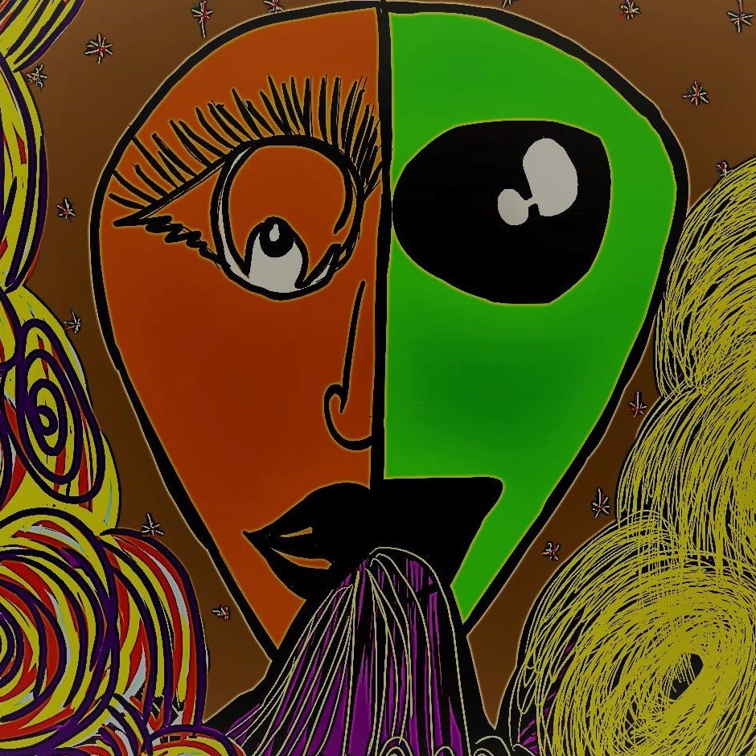

This is my home of wishes.
Here I post what I want to create and would like to share this with
you all.
As I keep on posting
I hope my esteemed readers will find it pleasing.

Why I created this Blog?
Writing made me feel a bit relaxed. I knew I had to create something
beautiful out of this sorrow. Life's totally unpredictable so I'm just
trying to hold onto things that I truly care and feel responsible
about.